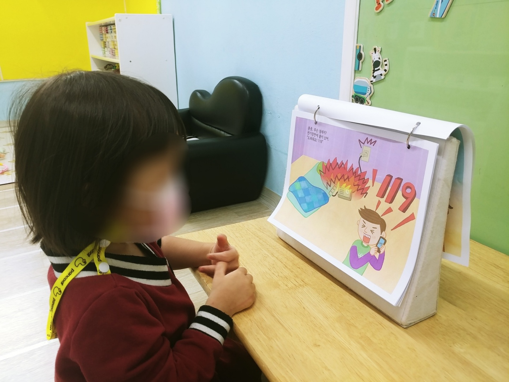

|기본생활
건강, 안전한 생활에 관한 지식, 기술, 태도를 배우고 익히며 올바른 습관을 길러, 자신이 건강과 안전을 자기 스스로 보호하고 타인을 존중하며 즐겁게 생활한다.
|신체운동
자신의 신체를 긍정적으로 인식하고 즐겁게 신체활동에 참여함으로써 영유아기에 필요한 기본 운동능력을 기른다.
|사회관계
자신의 존중감을 키우고 다른 사람의 정서를 인식하고 가족, 또래, 지역사회와 긍정적 관계를 형성하여 사회구성원으로 지식을 획득한다.
|의사소통
듣고 말하는 것을 즐기며 상황에 맞는 언어를 익혀 바른 언어생활을 하고 의사소통 능력과 기초적인 문장능력을 기른다.
|자연탐구
주변사물과 자연현상을 지각하고 호기심을 가지며 지속적으로 탐구하는 태도와 문제해결의 기초능력을 기르고 자연을 사랑하는 마음을 가진다.
|예술경험
주변의 친근한 환경과 생활에서 예술적 요소에 관심을 보이고 흥미롭게 경험하고 탐색함으로써 창의성과 감성을 기른다.